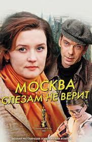

Фильмы -это искуство нашей жизни и они играют
важную роль в жизни нашего общества.Многие люди считают поход в кинотеатр одним из
лучших способов провести свой досуг.Фильм (англ. film «плёнка»), также кино́, кинофи́льм, телефи́льм,кинокарти́на — отдельноепроизведение
киноискусства. В технологическом плане фильм представляет собой совокупность движущихсяизображений
(монтажных кадров), связанных единым сюжетом[1].Каждый монтажный кадр состоит из последовательности фотографических
или цифровых неподвижных изображений (кадриков), на которых зафиксированы отдельные
фазы движения. Фильм, как правило, имеет звуковое сопровождение.В начале XX века в России принято было
говорить «фи́льма» (в женском роде[2]), и, кроме привычного нам значения, это слово относилось к киноплёнке[3].
Область человеческой деятельности, связанная с созданием и воспроизведением фильмов, называется
кинематографом. Кинематограф включает в себя область применения фильма как одного из направлений искусства
(киноискусство), (кинотехнику), а такжекиноиндустрию. Фильмы создаются путём записи движущихся изображений окружающего
мира с помощью киносъёмочных аппаратов или цифровых кинокамер, а также производятся из отдельных
изображений с использованием мультипликации или спецэффектов.
Просмотр фильмов является частью современной культуры. Герои популярных фильмов и актёры, их играющие,
зачастую становятся знаменитыми,
а их образы узнаваемыми. Специально для массового просмотра фильмов строят кинотеатры. Обычно продолжительность
фильма составляет 90—120
минут (полтора—два часа). В домашних условиях для просмотра фильмов традиционно используется телевизор с
подключённым к нему
видеопроигрывателем, в последнее время всё чаще для этих целей служат переносные
носители информации: USB-флэш-накопитель, флэш-память, персональный компьютер, смартфон и другие
электронные устройства воспроизведения видео.
K игровое кино, псевдодокументальное кино
документальное кино (или неигровое кино), документально-игровое кино;
научно-популярное кино (или научно-просветительское кино).
Игровое кино обычно принято классифицировать по следующим признакам:
по продолжительности экранного времени;
по количеству серий;
по отношению к первоисточнику (источнику сценария или идеи фильма);
по аудиовизуальному ряду, художественной форме;
по степени новаторского подхода;
по потребителю (целевой аудитории фильма, зрительскому сегменту рынка), в том числе классификация по объёму
(массовости) и возрасту аудитории;
по производителю;
по основным жанрам драматургии;
по целям авторов.
Классификация фильмов по продолжительности экранного времени:
короткометражный фильм;
полнометражный фильм.
Классификация фильмов по количеству серий:
односерийный фильм;
малосерийный фильм — две—три серии;
многосерийный фильм (мини-киносериал) — четыре—девять серий;
киносериал — десять—пятнадцать серий;
телесериал — более пятнадцати серий;
киножурнал — более пятнадцати выпусков.
Классификация фильмов по отношению к первоисточнику (источнику сценария или идеи фильма):
экранизация художественных произведений иных жанров — литературы, компьютерных игр, комиксов;
различные типы продолжения оригинального фильма: сиквел, приквел, спин-офф и другое;
ремейк (повторная версия фильма) и перезагрузка (фильм, игнорирующий сюжеты предыдущих фильмов данной серии).
Классификация фильмов по аудиовизуальному ряду, художественной форме:
звук:
немое кино, в том числе стилизованное;
звуковое кино;
изображение:
чёрно-белое кино, в том числе стилизованное;
цветное кино;
мультипликация:
мультипликационные фильмы;
кино-мультипликационные фильмы;
музыкальные фильмы, в том числе с элементами хореографии;
мюзиклы;
фильмы в стихах;
другое.
Классификация фильмов по степени новаторского подхода:
экспериментальное кино, в том числе авангард в кино;
традиционное кино.
Классификация фильмов по потребителю (целевой аудитории фильма, зрительскому сегменту рынка